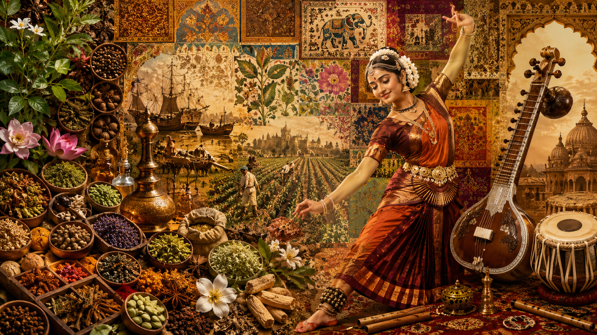

Esperienze Artigianali
Mani, Processo, Tessuto
Stampa con blocchi, ceramica, calligrafia, drappeggio del sari, styling con bandana riciclata, partecipazione al muro di rangoli e l'esperienza del bindi.
Unfiltered India
Una mostra culturale contemporanea che reinterpreta l'India attraverso artigianato, narrazione sensoriale, intelligenza materiale e design immersivo.

Bindi to Brera non è una dichiarazione geografica, ma di percezione.
Ospitata a Fabbrica del Vapore, la parola Brera simboleggia artigianato, raffinatezza, sofisticazione artistica e un'esperienza culturale di alto livello.
La mostra sfida gli stereotipi sull'India reinterpretandola attraverso la cultura materiale, la narrazione sensoriale, l'artigianato e il design immersivo.
Bindi rappresenta identità, intimità e simbolismo culturale. Brera rappresenta curatela, lusso e valore artistico elevato. Insieme, creano un ponte tra patrimonio e percezione contemporanea.
Stampa con blocchi, ceramica, calligrafia, drappeggio del sari, styling con bandana riciclata, partecipazione al muro di rangoli e l'esperienza del bindi.
Archivio delle Spezie, Camera delle Fragranze, Prodotti Ayurvedici e Strumenti Musicali presentati come cultura materiale piuttosto che spettacolo.
Un tunnel immersivo di origine, vibrazione, transizione spaziale e riflessione ispirato all'architettura e alla filosofia sonora.
Cerimonia di apertura con il Console Generale dell'India, danza classica Kathak e Bharatanatyam, medley Bollywood e musica live Sitar & fusion.
Street food regionale con bancarelle del Nord, Sud, Est e Ovest dell'India, con un angolo Masala Chai e dolci tradizionali indiani.
Il sito utilizza una palette contenuta di nero, crema, terra opaca, indaco e accenti metallici. L'atmosfera si avvicina a una mostra di lusso, un'installazione di moda e un museo culturale più che a un evento.

Due giorni a Milano dedicati all'artigianato, alla memoria materiale e alla percezione culturale indiana contemporanea.